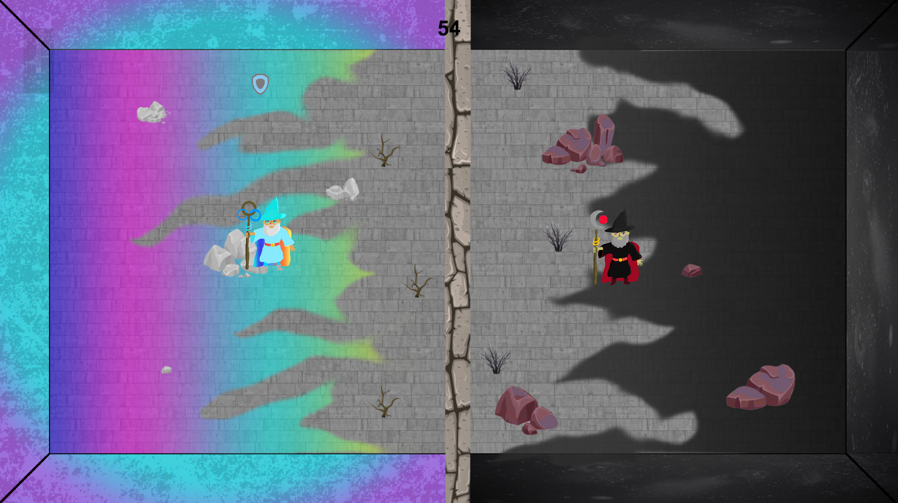

Code Game Jam
La Code Game Jam est un évenement annuel organisé au sein de l'IUT de Montpellier-Sète, j'ai eu la chance d'y participer avec quelques amis pour la 4ième édition (en janvier 2020). Le principe de cet évènement est semblable à n'importe quelle game jam :
En effet, le but est de créer un jeu video dans un temps imparti, ici c'état en un peu plus de 24h et de soumettre tous les jeux à un jury qui établie un top 3.
Nous avons donc eu l'occasion de créer un jeu pour la première fois et cela à été une expérience très enrichissante.
Dans ce projet je me suis occupé de tout ce qui est graphique, j'ai donc déssiner les personnages, la carte de jeu et créer
un bon nombre d'animations, ainsi que des objets ramassables et un monstre hostile.
Voici une image du jeu que nous avons produit :
